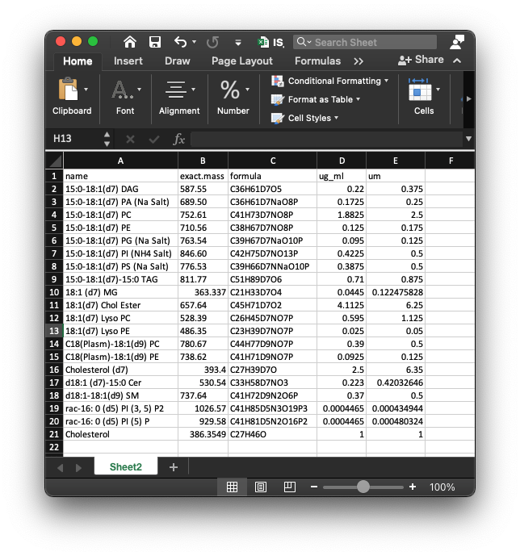

Overview of lipidflow
Xiaotao Shen PhD (https://www.shenxt.info/)
Chuchu wang PhD
School of Medicine, Stanford UniversityCreated on 2021-02-09 and updated on 2021-03-03
Source:vignettes/overview_of_lipidflow.Rmd
overview_of_lipidflow.RmdData organization
We need three types of data for lipidflow.
- Raw data of all the sample.
- Information of internal standards in samples.
- Lipid annotation table from other tools (lipidSearch).
1. Convert raw data to mzXML data
The raw lipidomics data should be converted to mzXML format files using ProteoWizard software. The parameter setting should be set as below figure shows:

2. Internal standard information
To do absolute quantification, we need to provide the information of internal standard in the samples. The data should be “xlsx” format, and like the below figures shows:

This is a example of internal standards in our demo data. The first column is “name” (name of internal standards), the second column is “exact.mass” (exact mass of internal standards), the third column is “formula”, the fourth column is “ug_ml” (concentration) and the fifth column is “um” (concentration).
And then put the internal standard information in “POS” and “NEG” folders, respectively.
3. Lipid identification information
The lipid identification table can be from any other software, for example, here we use the lipidSearch software from ThermoFisher, and then put the lipid identification table (xlsx format) for positive and negative mode in “POS” and “NEG” folder respectively.
The lipid identification table from lipidSearch is like the below figure shows:

Place data into a folder
After all the data have been prepared, then create a folder, for example: “example”. And then create “POS” and “NEG” folders in it, then put all the mzMXL data, information of internal standard and lipid identification table into the folders according to groups like the below figure shows:
In our demo data, we have two groups, D25 and M19, and each group has two repeats. And the information of internal standards is IS_information.xlsx, and placed in POS and NEG folder, respectively. The lipid annotation tables are lipid_annotation_table_pos.xlsx and lipid_annotation_table_neg.xlsx, then place them in POS and NEG folders, respectively.
Steps to get absolute quantification data of lipids
Step 1: Get retention time of internal standards
The step 1 is to get the retention time of internal standards.
Please click here for detailed instruction.
Step 2: Get relative quantification data
The step 2 is to get the relative quantification data of internal standards and lipids.
Please click here for detailed instruction.
Step 3: Get absolute quantification data
The step 3 is to get the absolute quantification data of lipids.
Please click here for detailed instruction.
Step 4: Output and organize results
The step 4 is to output and organize results.
Please click here for detailed instruction.
One function to finish all steps
We can also use one function (get_lipid_absolute_quantification()) to finish all previous steps.
Please click here to learn how to use.